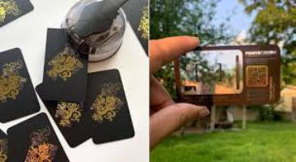

Как правильно создать цифровую визитную карточку: 10 лучших советов
Если вы чувствуете, что пришло время обзавестись цифровой визитной карточкой, воспользуйтесь этими советами, чтобы произвести неизгладимое впечатление.
Здесь мы даем вам наши лучшие советы по правильному созданию визитной карточки. Вам не нужно использовать каждый упомянутый элемент, просто добавьте то, что лучше всего подходит для вашего бизнеса.
1. Включите профессиональное изображение и дополнительные визуальные эффекты
Существует множество инструментов для создания цифровых визитных карточек , и качество изображения — это то, что их всех объединяет. Создавая свой собственный, начните с первозданного изображения себя. Вы должны выглядеть профессионально, уверенно и доступно для всех, кто взглянет на вашу визитку. Но, если возможно, сделайте свою карточку более визуальной, чтобы привлечь внимание людей.
Логотип — отличный вариант, а также видео или слайд-шоу, отражающее вашу компанию или рассказывающее о ее достижениях. Что бы вы ни использовали, убедитесь, что оно расположено стратегически и не занимает карту.
2. Выделите свое имя и должность
Цифровая визитная карточка — это именно то, что является виртуальным представлением вашей профессии или компании. Таким образом, он должен отображать детали, которые заинтересуют клиентов или других специалистов.
Разместите свое имя, должность и компанию в центре. Это хорошая идея, чтобы имя было больше и жирнее, чем другие детали, чтобы читатель мог сразу идентифицировать вас.
Также все должно быть разборчиво. Лучший способ обеспечить это — не делать текст слишком маленьким, а также избегать сложных шрифтов. Придерживайтесь шрифтов без шрифтов, и ваша визитная карточка будет выглядеть аккуратно и профессионально.

3. Используйте простые цветовые схемы
Избегание сложных функций важно для многих частей вашей цифровой визитной карточки, но вам также необходимо учитывать ее цвета. Помните, что цель открытки не в том, чтобы поразить зрителей своими эффектами, а в том, чтобы подчеркнуть ваши детали и вызвать положительные эмоции.
Независимо от того, выбираете ли вы стиль карты самостоятельно или используете онлайн-генераторы цветовой палитры для вдохновения, решите, на что люди должны обратить внимание и какой эффект вы хотите, чтобы вся карта имела.
Первый совет, о котором следует помнить, заключается в том, что вы должны выбирать не более двух-трех цветов. Например, белый или бледный фон хорошо подходит для текста наряду с более яркими цветами, чтобы выделить визуальные эффекты или определенную информацию, например заголовки, проекты или филиалы.
Кроме того, подумайте о влиянии некоторых оттенков и о том, как использовать их в своих интересах. Красный и оранжевый возбуждают ум, а синий или зеленый могут успокаивать и поднимать настроение. Что больше всего представляет ваш бизнес и цели?
4. Добавьте четкие контактные данные
Четкое имя и описание работы жизненно важны, но вы также хотите, чтобы людям было как можно проще связаться с вами. Эта информация и то, как она представлена, рисует лучшее представление о том, кто вы есть, и может привести к хорошим точкам соприкосновения.
Контактная информация не должна быть кричащей. Вы можете перечислить их простым шрифтом вместе с любой другой базовой информацией. Тем не менее, будьте краткими, чтобы вы могли разместить дополнительные функции на своей цифровой визитной карточке.
5. Сделайте ссылку на свой сайт заметной
Если у вас есть профессиональный домен, не пропускайте его при разработке визитной карточки. В зависимости от службы, которую вы используете для его создания, и от того, сколько информации вы можете вместить, существуют разные способы интеграции вашего веб-сайта. Это может быть простая ссылка вместе с кратким описанием, логотипом, баннером или другими визуальными элементами. Однако, чтобы сделать его более привлекательным, подумайте о гиперссылке на отличительную кнопку.
Что бы вы ни разместили вокруг этой кнопки, люди с большей вероятностью заметят это и нажмут на нее, чтобы подробнее изучить ваши достижения. Он также не должен занимать так много места.
6. Включите ссылки на социальные сети
Как и ваш веб-сайт, ваши профили в социальных сетях являются отличным дополнением к вашей цифровой визитной карточке. И вы можете включать их теми же способами, хотя один лучше другого.
Хотя список гиперссылок всегда можно использовать, он не самый привлекательный. Многие платформы для создания визитных карточек предлагают в качестве альтернативы кнопки и значки. Они могут располагаться в удобной части карты, в то время как оставшееся место вы используете для информации, которая больше нуждается в этом.
Но, в конце концов, то, куда должна идти каждая функция, зависит от типа бизнеса, его целей и того, на чем вы хотите, чтобы зритель сосредоточился.
7. Используйте ссылки и файлы, чтобы привлечь внимание к важным проектам
Вы можете использовать свою цифровую визитную карточку, чтобы продемонстрировать некоторые из своих работ. Выберите наиболее подходящие и лестные ресурсы для обмена, будь то веб-сайты или файлы, но не слишком много.
Вам также необходимо проверить, что включает в себя каждая услуга по разработке карт. Некоторые, например Switchit , позволяют добавлять ссылки и документы. Другие просто разрешают веб-ссылки. Если вы делаете визитную карточку с нуля, подумайте, как лучше всего представить свои проекты, используя один или оба метода.
Если вы решите добавить файлы, убедитесь, что они безупречны. Несколько страниц интересной и легкодоступной информации могут повысить эффективность вашей визитной карточки сверх того, что вы можете вместить в ее готовое пространство.
Составьте портфолио или список услуг и достижений в формате PDF. Если вы пишете и публикуете профессиональную электронную книгу , добавьте ссылку или цифровой файл, чтобы люди могли быстро найти ее. Проявите творческий подход, показывая людям, на что вы способны.
8. Упомяните ключевых партнеров и обзоры
Попробуйте добавить своих соавторов на свою визитную карточку. Это покажет зрителям, что у вас есть поддержка других профессионалов или компаний. Если они популярны, еще важнее упомянуть их.
Вам не нужно много говорить. Просто добавьте их имена и гиперссылки, чтобы зрители могли их заметить и перейти по ним. А еще лучше, выровняйте их логотипы, чтобы придать вашей открытке изюминку.
Это было бы хорошим местом для того, чтобы поделиться любыми положительными отзывами, будь то партнеры или клиенты. Достаточно нескольких коротких цитат, если ваша карта не принимает цифровые файлы, и в этом случае вы можете представить свои отзывы полностью.
9. Используйте четкие призывы к действию
Цифровая визитная карточка — это такой же маркетинговый инструмент, как информационный бюллетень или реклама. Это означает, что вы должны включить призывы к действию среди своих профессиональных данных.
Например, в разделе о ваших проектах предложите зрителям щелкнуть ссылку или кнопку для доступа к веб-сайту вашего самого важного предприятия. В то же время вы можете направлять людей на свои самые активные платформы социальных сетей.
Смысл в том, чтобы сделать карту кристально ясной для навигации и понимания. Слишком много беспорядка или плохой текст могут оттолкнуть зрителей и оставить у них плохое впечатление.
10. Используйте услуги цифровых визитных карточек с интеллектуальными функциями
При поиске лучшего сервиса для разработки и размещения вашей виртуальной карты проверьте, какие интеллектуальные функции предлагают различные платформы, и эффективно используйте их.
Как профессионал, вы должны быть довольны тем, как ваша карта представляет вас, поэтому чем удобнее ее цифровые инструменты, тем лучше. Проверьте наличие таких предложений, как QR-коды, сканеры документов, подписи электронной почты и функции подключения.
Вы сможете поделиться своей визитной карточкой и быстрее собирать информацию, а также более эффективно общаться с клиентами или коллегами. Единая высококачественная услуга может принести пользу вашим отношениям с клиентами, рабочему процессу, команде и многому другому.
Теперь, когда вы знаете, что должна содержать ваша цифровая визитная карточка и как сделать ее максимально привлекательной, посмотрите, какой дополнительный контент вы хотите прикрепить. Ссылки на веб-сайты, изображения, видео, файлы PDF и EPUB — все приветствуется при хорошем планировании.
Чтобы ускорить процесс, сосредоточьтесь на совершенствовании этих ресурсов, прежде чем приступать к дизайну своей визитной карточки. Затем вы можете просто соединить все и сразу же начать производить впечатление.